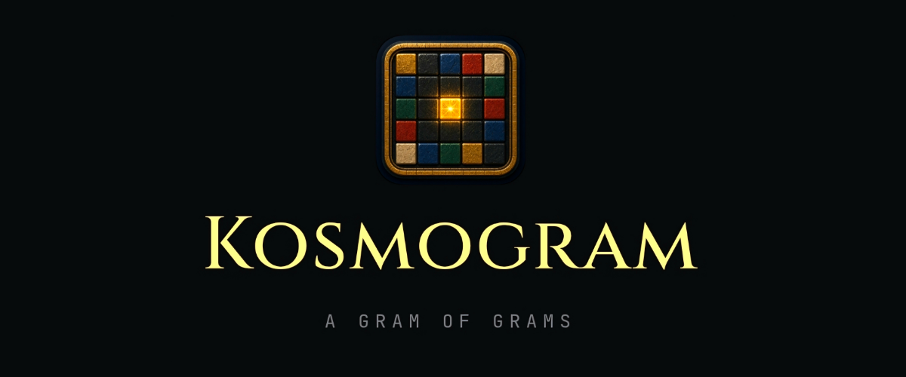

Personal Project
Kosmogram
1인 풀스택 — 기획·설계·FE·BE·인프라·운영 · 라이브 서비스 중
노노그램을 풀어 자기 영지를 가꾸는 협력 모자이크 웹게임. 노노그램 풀이 엔진, 토러스 무한 월드, 이중 통화 경제 등 알고리즘·게임 수학·동시성까지 다뤘다. 기획·아키텍처·기술 선택은 직접 결정하고, 세부 구현은 AI 페어로 가속했다.



노노그램 풀이·출제 검증
5~10 가변 화판의 풀이 수를 판정(2~5개는 연작 흡수). 라인 시뮬레이션으로 난이도 별점(1~5)·라벨(universal·color_only·mono_only·maniac·reject 5종)을 매기고, 거부 시 1셀 자동수정을 제안. 완전 동일 그림은 canonical SHA-256으로 차단(회전·반사는 별개).
solveAll(hints, size, 6)
// 1=단일·2~5=연작·6+=거부 (size 5~10)
// 출제검증(PVS) p99: 5×5<5ms·10×10<100ms · CI 회귀 게이트토러스 무한 월드 — 엔진 없이 직접 렌더
좌표가 wrap되는 도넛 평면. 거리는 짧은 경로, 겹침은 wrap 경계까지 검사. 세계=SVG/DOM 직접 렌더, UI=React.
torusDelta(95,5,100)===10
// 직선 -90 대신 wrap +10협력 경제 — 장부·동시성
모든 통화 변동을 장부 1행으로 원자적 기록. 더블스펜드는 조건부 감산으로 차단.
UPDATE ... SET bal = bal - :n
WHERE bal >= :n -- 0행이면 롤백군집 인식 연결망
영지들이 자연스러운 도시처럼 뭉치도록, 토러스-MST 백본에서 가까운 간선만 군집으로 묶고 군집 사이는 다리 하나로 잇는다. 같은 군집 안은 Gabriel 기반 근접 그래프(차수 상한)로 촘촘히.
MST(rest 가중) → 군집 = rest ≤ dLocal 연결요소
// intra: Gabriel(같은 군집) ∪ bridge: 군집쌍당 1
// 라이브 렌더에서 실제 호출 (gameWorld.ts)React 18 · SVG/Canvas · Zustand · TanStack Query · Fastify · Prisma · SQLite · Zod · Clerk · Fly.io · Cloudflare · GitHub Actions